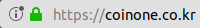
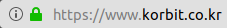
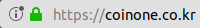
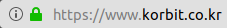

- 8
- 6
주요 암호화폐 거래소 8개 중 6개 거래소가 EV 인증서를 탑재하지 않고 있습니다.
주요 암호화폐 거래소 8개 중 6개 거래소가 EV 인증서를 탑재하지 않고 있습니다.
 




이 자물쇠는 당신이 접속한 사이트에 암호화를 해서 접속했고 중간자에 의해 변조되지 않았다는 것을 나타냅니다. 하지만 당신이 올바른 사이트에 접속했다는 것을 절대로 나타내지 않습니다.
코빗을 예로 들어 설명하자면 코빗의 주소는 korbit.co.kr입니다. 만약 해커가 korbit.com도메인을 샀다면 자신이 korbit.com의 소유주가 맞다는 걸 증명하고 인증서(자물쇠)를 달 수 있습니다.

하지만 EV 증명서는 다릅니다. 루트 인증기관이 "이 도메인의 소유자는 해당 사업자가 운영하는 것이 맞다"라는 것을 전화나 서류 등의 엄격한 절차를 거쳐 확인이 된 곳에만 인증서를 발급하기 때문입니다.
그동안 은행을 가든 어딜 가든 이용자들만 본인이 맞는 지 공인인증서 등을 사용하면서까지 철저하게 인증을 해야 했습니다. 하지만 업체 측에서 본인이 맞는 지 증명하는 것을 한 번이라도 보셨나요?

업체 측은 피싱을 당하지 말라고 하면서 주소창의 자물쇠 표시를 확인할 것을 요구했지만 이는 아무런 도움이 되지 않습니다. 도메인을 확인한다 해도 유니코드를 이용해 굉장히 비슷해 보이는 도메인을 만들어 인증서를 달아버리면 그만이죠.
실제로 바이낸스와 크립토피아라는 거래소가 구글 광고까지 이용해가며 피싱의 타겟이 된 전적Binance, Cryptopia이 있습니다.
여러분은 p와 р가 구분이 가시나요? 하나는 여러분이 잘 아는 라틴 알파벳 p이고 하나는 키릴 문자 Er입니다. 이것을 이용해서 uрbit.com 도메인을 구매하면 주소창과 자물쇠를 확인 해도 당할 수밖에 없는 피싱 사이트를 만들 수 있게 됩니다. 주소창을 확인한다고 될 문제가 아니죠.
거래소들이 루트 인증기관에서 검사를 받고 EV 인증서를 받아서 달아놓았다면 피싱 사이트에선 자물쇠 표시 옆에 회사 이름이 뜨게 만들 수 없기 때문에 피싱을 예방할 수 있습니다. 이런 것이야말로 법으로 강제하고 규제해야 하는 것 아닐까요?